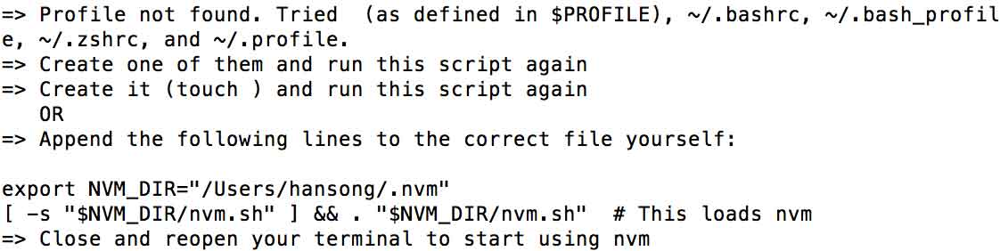
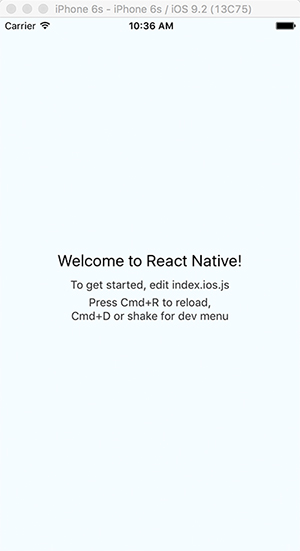
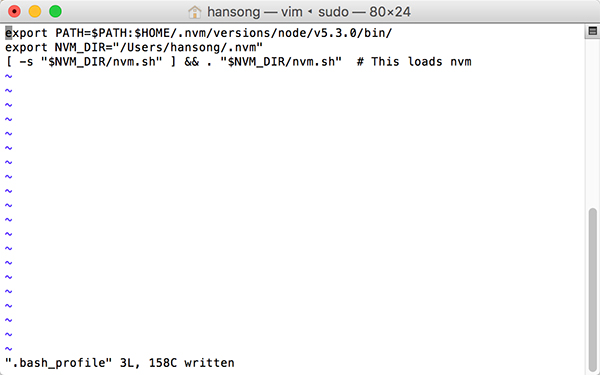

系统需求
- 1) OS X － 假定我们在苹果系统下面开发
- 2) Homebrew 苹果系统的apt-get，方便我们安装 Watchman 和 Flow
- 执行 ruby -e “$(curl -fsSL https://raw.githubusercontent.com/Homebrew/install/master/install)” 安装Homebrew
- 3) Node.js4.0或者更高版本
- 执行 wget -qO- https://raw.githubusercontent.com/creationix/nvm/v0.29.0/install.sh | bash 安装nvm。然后执行 nvm install node && nvm alias default node,此命令安装最新版本的node.js,并设置终端命令（node）。用nvm你可以安装多个版本的node.js，并能轻松转换版本。
- 执行命令npm install -g npm@2安装npm，这儿安装的是npm 2，因为如果你的node.js版本是5.0或者更高版本的话，建议你安装npm 2，它比npm 3 要快多了。
- 不知道什么是npm?
- 4) 执行 brew install watchman 安装watchman，建议安装。
-
5) 如果你想使用flow，执行 brew install flow进行安装
- 建议：定期执行 *brew update 和 brew upgrade，以保持应用程序在最新状态*
- 注意：OS X系统中默认没有bash配置文件，因此安装nvm时可能会因为找不到bash的Profile而会引起失败，如下图

解决方法: sudo vim ~/.bash_profile 创建并打开profile文件，这时候文件应该是空白的，把export NVM_DIR=”/Users/hansong/.nvm”
[ -s “$NVM_DIR/nvm.sh” ] && . “$NVM_DIR/nvm.sh” # This loads nvm（所有斜体部分）添加到.bash_profile文件中去。然后按esc键使vim编辑器回到命令行模式，输入:wq存储文件并退出vim。重启终端即可运行nvm命令了。 - 如果安装Node.js慢的话，可以尝试国内的镜像，比如淘宝的镜像，执行如下命令：NVM_NODEJS_ORG_MIRROR=http://npm.taobao.org/mirrors/node nvm install node
iOS
- 需要Xcode7.0或者更高版本，可以在AppStore中下载。
Android
- 需要安装Android SDK。
快速开始
- npm install -g react-native-cli
-
react-native init AwesomeProject
耐心等待，这个过程中会在网上下载很多文件，因为网络原因还可能经常出错，这个是没办法的事儿。
这样我们就创建了一个AwesomeProject的工程，既有iOS也有Android。
如何在iOS上面运行这个工程呢
- cd AwesomeProject/iOS
-
双击打开AwesomeProject.xcodeproj,运行此工程
如果你比较幸运，那么在等待不算短的时间的编译后，您的模拟器上会出现这个界面
但是，往往我们并没有那么幸运，Xcode在编译这个工程前会先运行两个脚本，一个是packager.sh，一个是react-native-xcode.sh。那么问题来了，此过程中会出现诸如：”node: command not found”, “react-native: command not found”等问题，究其原因就是找不到这些程序。
如何解决呢，还记得我们创建的那个 ~/.bash_profile文件吗，打开它（比如用vim），在前面加上
export PATH=$PATH:$HOME/.nvm/versions/node/v5.3.0/bin/，node和react-native 这两个程序都在这个目录下面。修改完之后的.bash_profile文件如图：

当然，如果你的node版本不是5.3.0，请自己查询并修改为正确的路径。然后打开 react-native-xcode.sh ，在最前面加上source ~/.bash_profile。
再编译运行，应该就没什么错误了。
到此我们的环境就算是搭完了，接下来就是开始一步步学习react-native了。